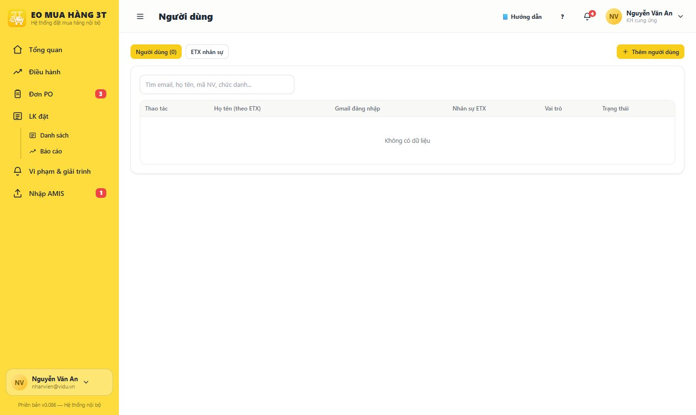
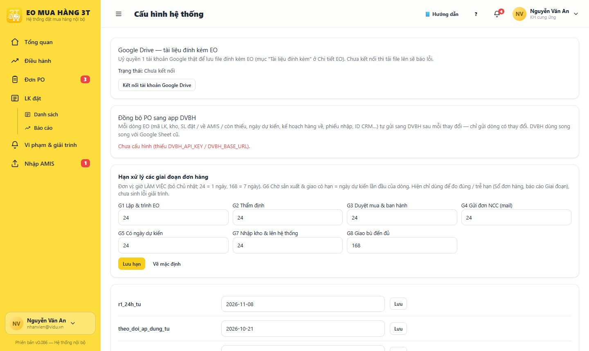

⚙️ Hướng dẫn cho Admin
Admin có mọi quyền của các vai trò khác + mục CÀI ĐẶT trong menu.
1. Người dùng & vai trò
- Người mới đăng nhập bằng Gmail → tài khoản chờ duyệt (số đỏ ở menu Người dùng).
- Vào Người dùng → duyệt, gán vai trò (Admin · KH cung ứng · Kế toán · Kho · Theo dõi tiến độ · View) và các cờ (NV đặt hàng, NV kho, kế toán, theo dõi TD, chỉ xem), kho phụ trách.
- 1 người dùng nhiều Gmail: thêm Gmail phụ ở cột Gmail đăng nhập.
- Tab ETX nhân sự: đồng bộ họ tên / chức danh (bấm tay). Nghỉ việc → tự khoá tài khoản liên kết.

| Quyền | Ai |
|---|---|
| Xem mọi dữ liệu | Mọi tài khoản đã duyệt |
| Nhắc giải trình (Điều hành, Vi phạm) | Admin · KH cung ứng · Theo dõi tiến độ |
| Nhập / sửa AMIS | Admin · Kế toán |
| Hủy PO đã ban hành | Admin |
2. Danh mục
- Đối tác & lý do PS: tên chuẩn + bí danh (vd KRF → Karofi). Giá trị lạ khi lập PO bị chặn / hỏi thêm mới.
- Kho (mã kho hiển thị gọn), loại hình (ý nghĩa cấp 2), bảng lỗi giải trình (Ai / Lỗi gì).
3. Cấu hình hệ thống
- Hạn từng giai đoạn (giờ làm việc), ngày áp dụng quy tắc theo dõi.
- Kết nối Google Drive (lưu file đính kèm), đồng bộ PO sang app DVBH (gửi ngay / đồng bộ toàn bộ).

4. Hộp thư theo dõi
Hộp theodoimuahang@gmail.com là nguồn để app biết nhân viên đã thúc NCC. Không dùng hộp này để đăng ký dịch vụ ngoài (thư quảng cáo làm nhiễu).
Nhắc nhân viên luôn CC hộp này và ghi mã 3TDO / mã linh kiện trong mail với NCC.